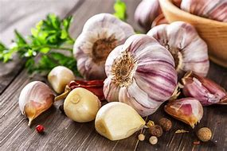

Ingredient Spotlight: Garlic

Overview
Description: Garlic is a flavorful bulb used in cuisines worldwide, known for its strong aroma and health benefits.
Origin: Garlic is native to Central Asia and has been cultivated for thousands of years.
Nutritional Information
| Nutrient |
Amount per 100g |
| Calories |
149 |
| Fat |
0.1g |
| Carbohydrates |
33g |
| Protein |
6g |
Health Benefits:
- Rich in antioxidants and has anti-inflammatory properties.
- May boost the immune system and improve heart health.
Culinary Uses
Flavor Profile: Garlic has a pungent flavor that mellows when cooked, enhancing many dishes.
Cooking Methods: Commonly used in sautéing, roasting, and as a seasoning.
Common Dishes:
- Garlic bread
- Garlic shrimp
- Garlic mashed potatoes
Storage and Preparation Tips
Storage Guidelines: Store in a cool, dark place; avoid refrigeration to prevent sprouting.
Preparation Tips: Crushing or chopping garlic releases its flavor compounds.
Varieties and Substitutes
Types:
- Softneck garlic
- Hardneck garlic
- Black garlic
Substitutes:
Shallots or garlic powder can be used as substitutes in recipes.
Fun Facts and Trivia
- Garlic has been used for both culinary and medicinal purposes for over 5,000 years!
- There are over 600 varieties of garlic grown around the world.
FAQs
Q: Is garlic healthy?
A: Yes, garlic is highly nutritious and offers numerous health benefits.
Q: Can I eat raw garlic?
A: Yes, raw garlic can be eaten, but it may have a strong flavor and smell.